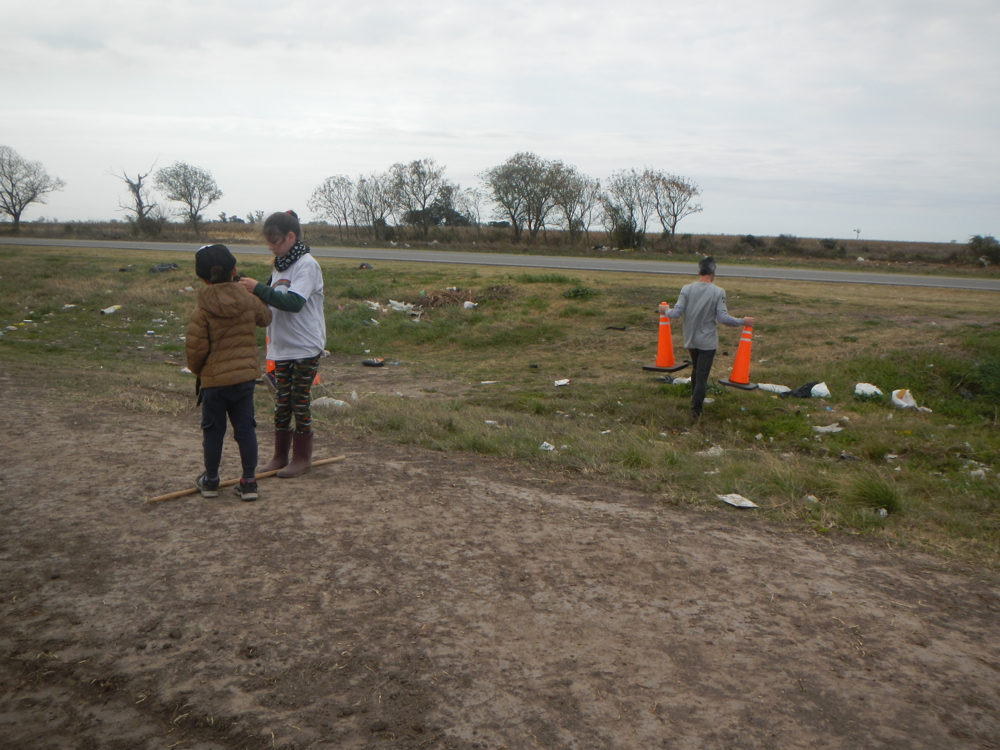
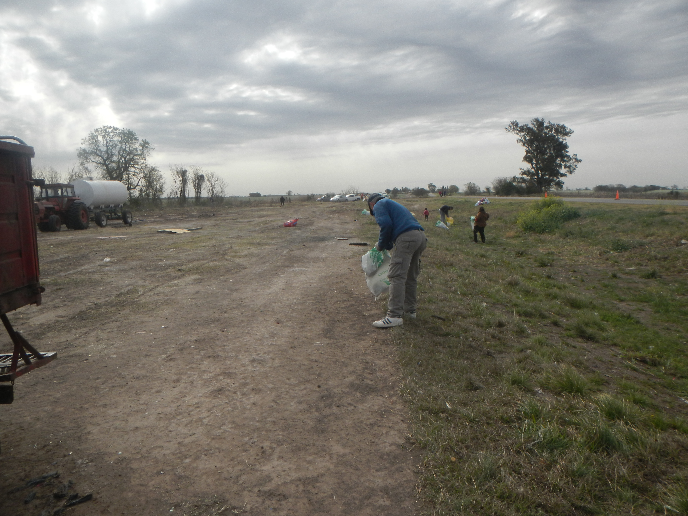
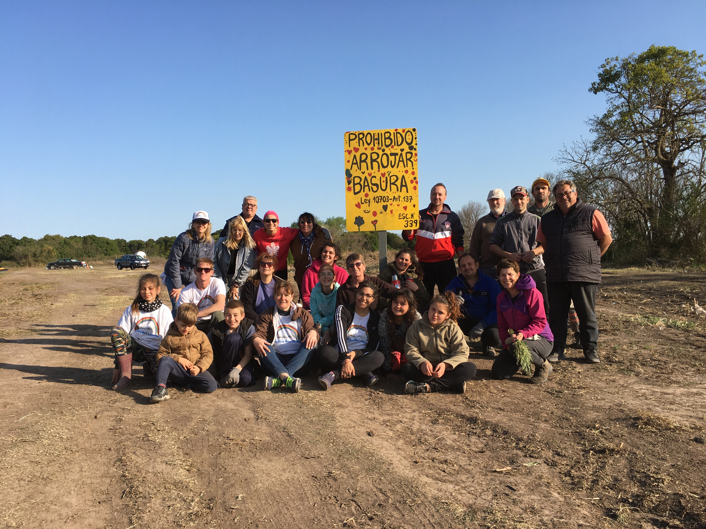
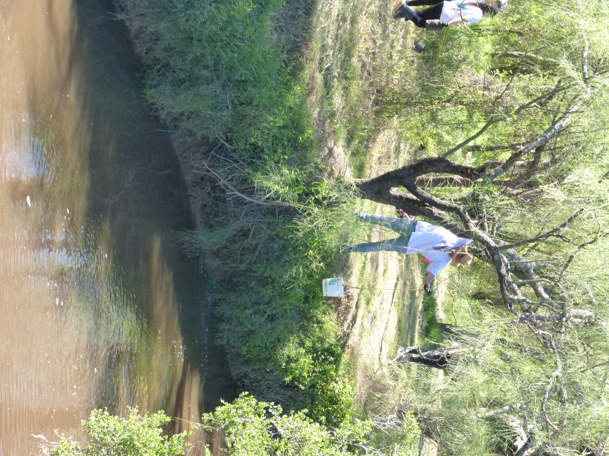
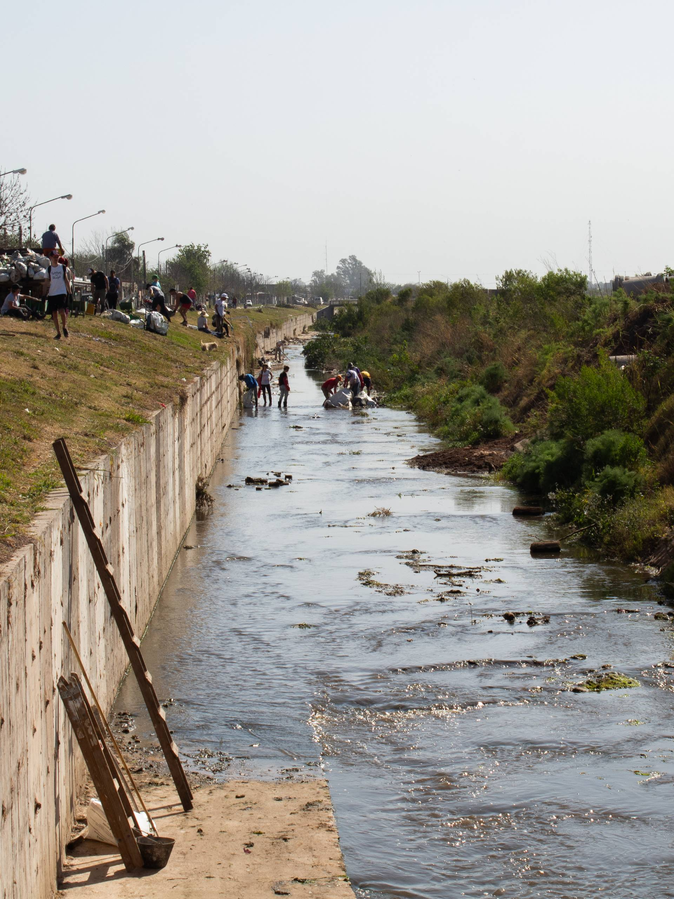
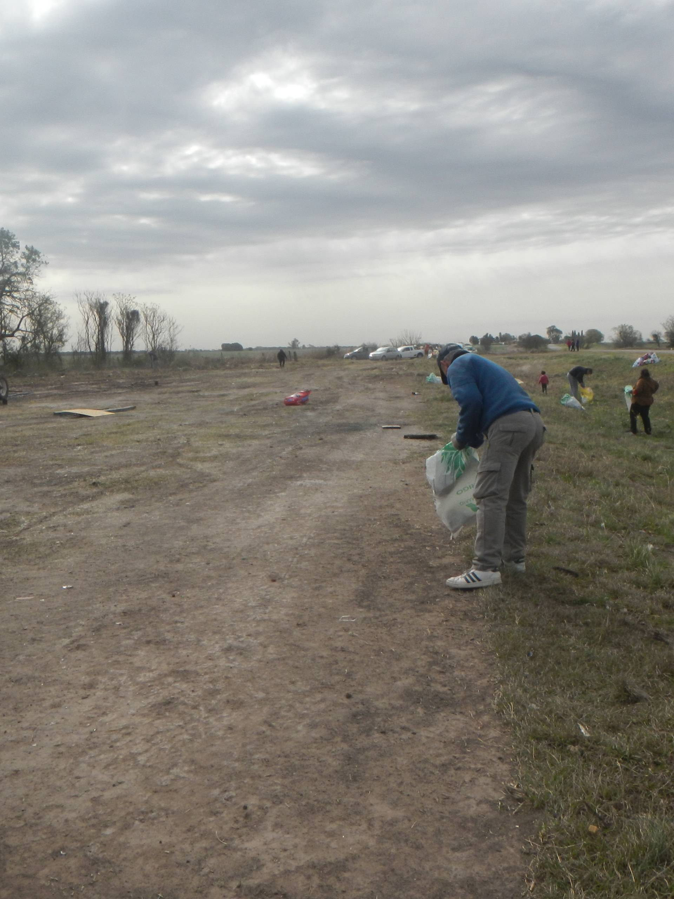
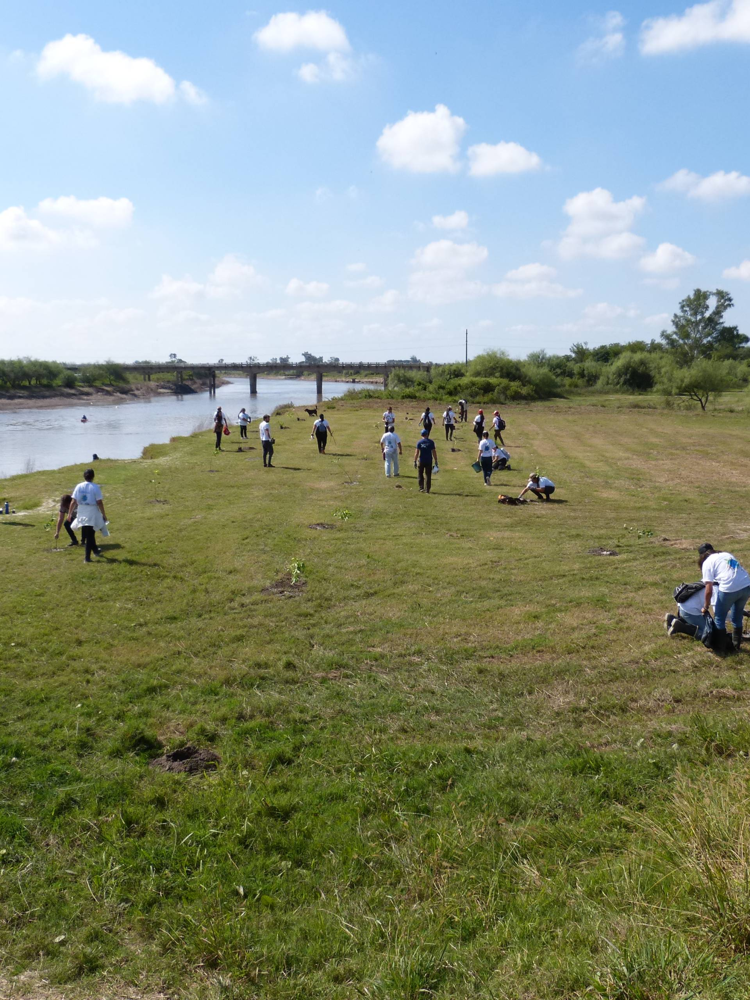
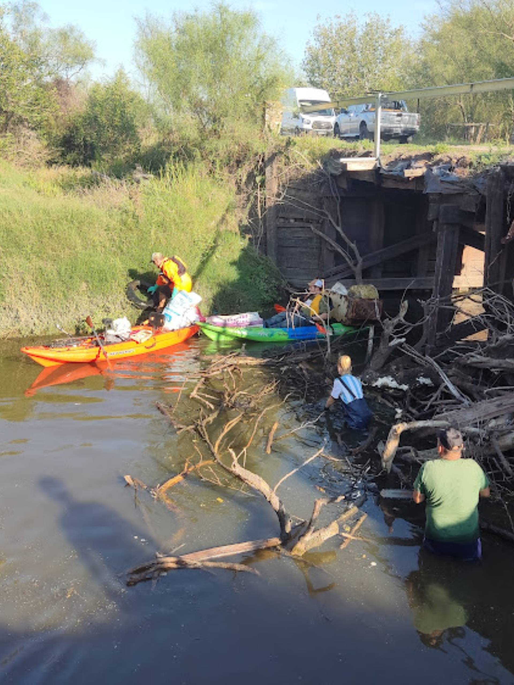
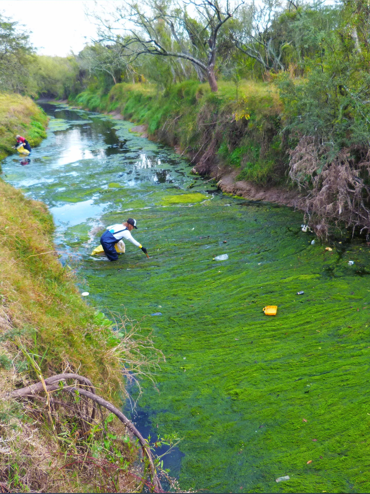

Proyectos

Cirilo

Canal Norte Rafaela

Colonia Rivadavia

Esperanza

Puente Cirilo

Puente Flesia
Objetivos
🌳 Reducción de la cantidad de desechos y sustancias tóxicas presentes en los cuerpos de agua.
🌳 Educar y sensibilizar al público sobre la importancia de la conservación de los recursos hídricos
🌳 Restaurar los ecosistemas acuáticos degradados mediante la eliminación de desechos
🌳 Involucrar a la comunidad local en actividades de limpieza y conservación de ríos